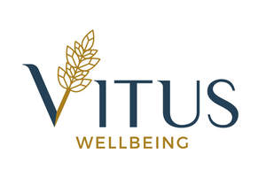
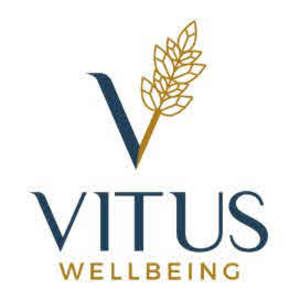

Trade Mark Journal No.2025/011 14 March 2025
UK00004168625 4 March 2025 (41,44)
Mark 1

Mark 2

- Class 41
- Health and wellness training; Health club services [health and fitness training]; Training services relating to health and safety; Education in the field of occupational health and safety; Training services relating to occupational health; Education and training services in the field of occupational health and safety; Health education; Consultancy services relating to the training of employees; Provision of educational health and fitness information; Education services for managerial staff; Education services relating to health; Providing of training in the field of health care and nutrition; Consultancy services relating to the education and training of management and of personnel.
- Class 44
- Psychotherapy; Holistic psychotherapy; Psychotherapy services; Psychological counseling; Psychiatry; Medication counseling; Psychological counselling; Counseling relating to occupational therapy; Hypnotherapy; Counselling relating to occupational therapy; Psychological therapy for infants; Insomnia therapy services; Therapy services; Art therapy; Medical counseling; Medical counselling; Psychological treatment; Psychological counseling of staff; Counselling relating to the psychological treatment of medical ailments; Music therapy; Psychiatric consultation; Music therapy services; Music therapy for physical, psychological and cognitive purposes; Psychological counseling services in the field of sports; Medical counseling services; Psychologist (Services of a -); Services of a psychologist; Anti-smoking therapy; Medical counselling services; Meditation services; Health counseling; Psychiatric services; Health counselling; Speech therapy services; Psychological consultation; Providing psychological treatment; Lifestyle counseling and consultancy for medical purposes; Nutrition counseling; Individual medical counseling services provided to patients; Health care relating to relaxation therapy; Individual and group psychology services; Counselling relating to the psychological relief of medical ailments; Nutrition counselling; Addiction treatment services; Medical counseling relating to stress; Psychological assessment services; Rehabilitation services for substance abuse patients; Medical services in the field of treatment of chronic pain; Psychological care; Counselling relating to diet; Psychiatric testing; Withdrawal treatment services for addicts; Psychological testing services; Mental health services; Personality assessment services [mental health services]; Professional consultancy relating to health care; Consultancy relating to health care; Health consultancy; Personality testing [mental health services]; Consultancy services relating to health care; Professional consultancy relating to health; Health care; Mental health screening services; Advisory services relating to health care; Consulting services relating to health care; Health clinic services; Public health counseling; Health risk assessment; Health risk assessment surveys; Health assessment surveys; Providing mental health rehabilitation facilities.
Vitus Wellbeing Ltd